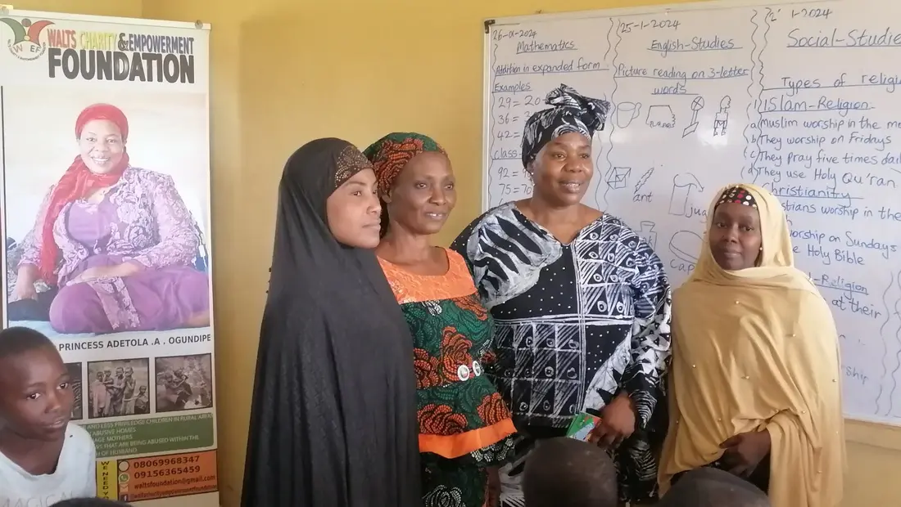
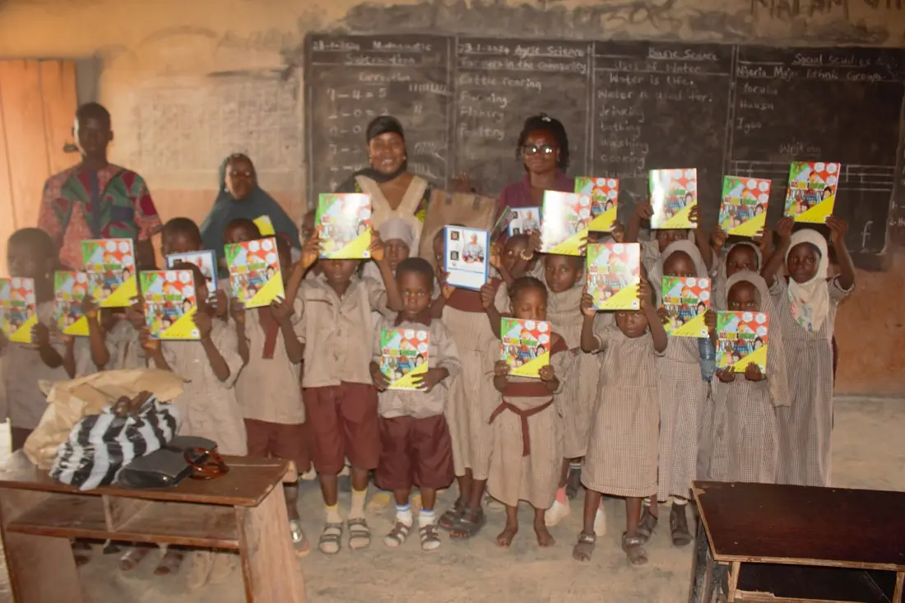
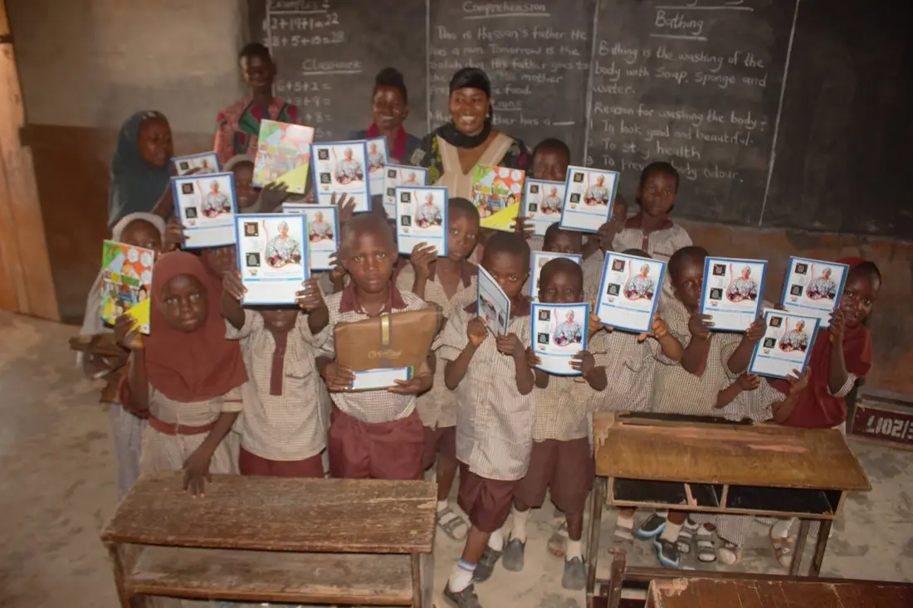
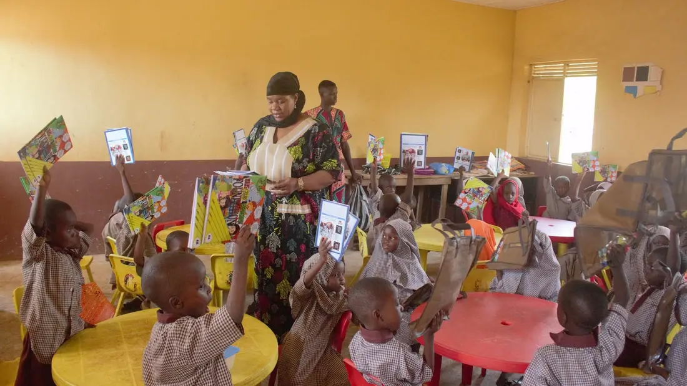
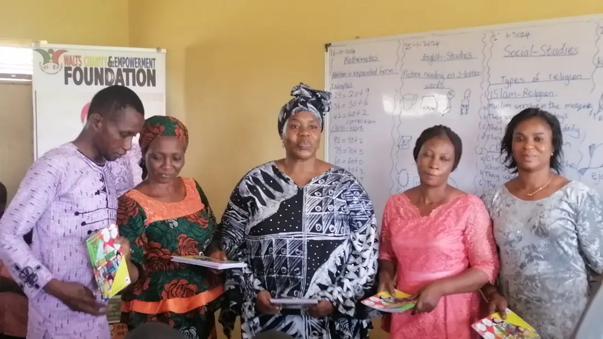
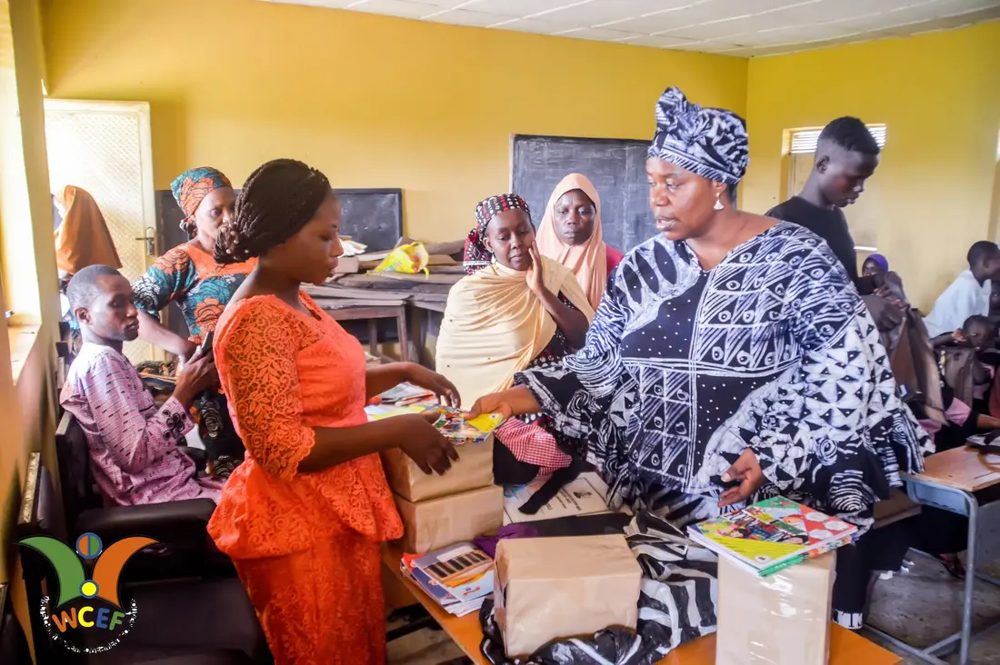
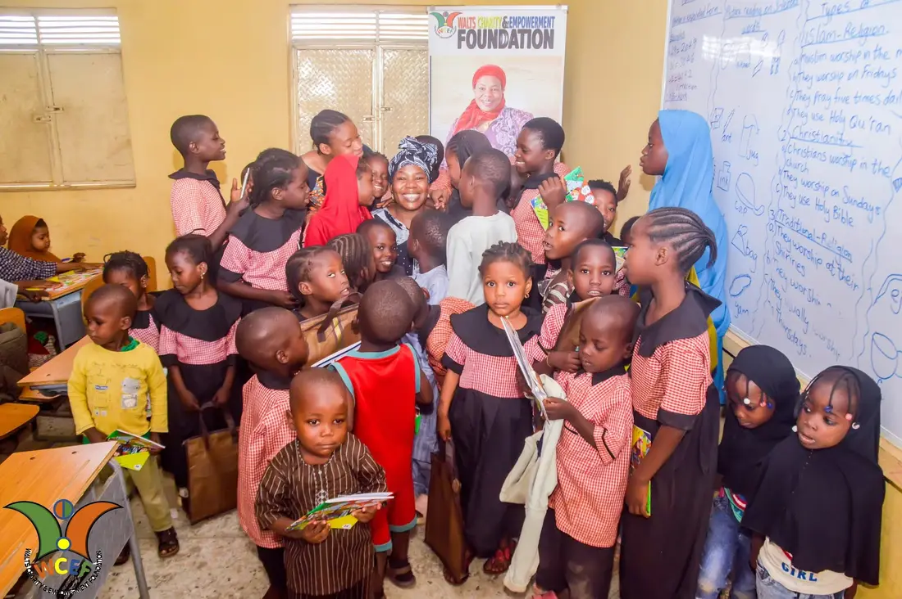
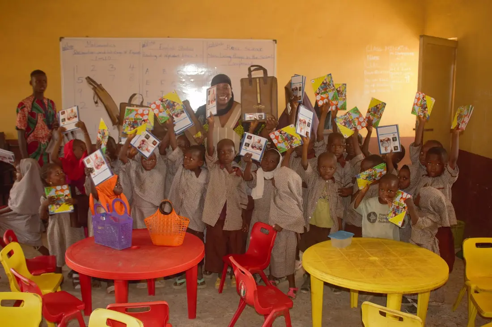

In the field
Gallery of impact.
A curated record of our outreach — the people, places and moments behind our work in rural Nigeria. Tap any image to view it larger.
In the field
A curated record of our outreach — the people, places and moments behind our work in rural Nigeria. Tap any image to view it larger.














Captions describe the nature of each outreach. Replace with event-specific detail as it becomes available.
Join us in reaching the communities mainstream development too often misses.
Donate Now